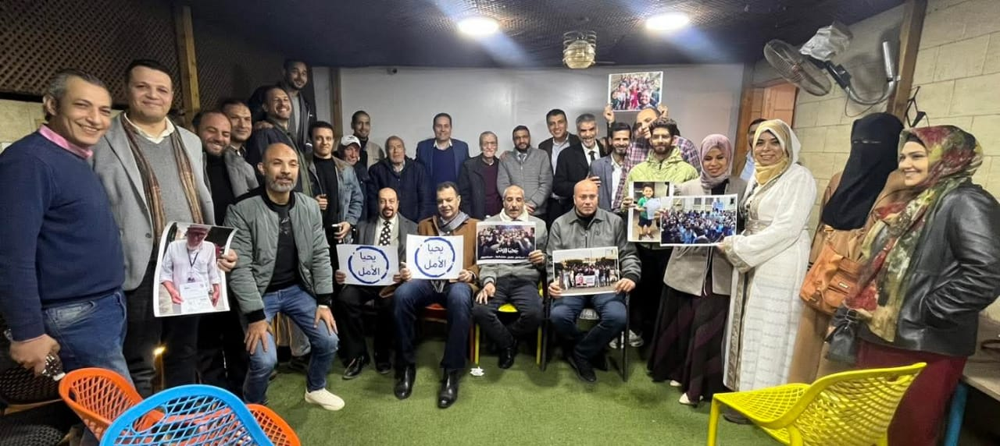

عقد حزب تيار الأمل برئاسة وكيل المؤسسين السيد احمد الطنطاوي إجتماعا مع عدد من أعضاء التيار ممثلين عن 11 محافظة لمناقشة الأمور المتعلقة بالحزب، ووضع خطة عمل خلال الفترة القادمة، وقد عبر الزملاء الأعضاء عن آرائهم كالآتي:
إقترح د. مجدي غلاب عدة أفكار لحل مشكلة عدم وجود مقر للحزب، منها شراء مقر للحزب عن طريق تمويل عقاري او منح أحد الشقق المملوكة له لصالح الحزب أو الانضمام إلي أحد الأحزاب القائمة والمعترف بها من لجنة شئون الأحزاب، كما شدد على المتابعة القانونية لقضية المعتقلين.
إقترح أ. محمد أبو الديار شراء مقر وتحويله لمكتب محاماه تفاديا للمساءلة القانونية، كما إقترح ذهاب جماعي لأعضاء التيار لمكاتب الشهر العقاري للضغط من اجل السماح بتسجيل توكيلات لتأسيس الحزب.
شدد د. طه علي تجهيز كوادر جديدة لقيادة المشهد وخلق طبقة جديدة من النخب السياسية، والسعي المستمر لإمتلاك مقر يكون مملوكا للحزب. كما شدد د. طه علي التواصل مع الأعضاء المسجلين بالرجوع إلي الاستمارات الالكترونية، والتركيز على تطوير العمل التنظيمي والتواصل بين الأعضاء داخل كل منطقة، والحرص على نشر منشورات الحزب علي وسائل التواصل الإجتماعي.
شدد أ. محمد علي ضرورة العثور على دعم مادي من اجل لجنة الإعاشة، والسعي للإلتحام بالدوائر الشعبية وتجاوز الخلافات وتوسيع مهام كل من اللجنة القانونية والإعلامية، والتواصل المستمر مع جمهور الحملة وطرح أفكار جديدة خارج الصندوق، وكذلك التواصل مع الأعضاء المغتربين خارج مصر.
إقترح أ. ماهر تشكيل لجنة كفاءات لإختيار الكوادر المناسبة لتولي مناصب قيادية داخل الحزب، واجراء اجتماع عام لأعضاء الحزب.
شدد أ. محمد حسين على خلق حالة من الضغط الإعلامي والقانوني لعمل توكيلات لتأسيس الحزب واجراء اجتماعات دورية على الأقل كل أسبوعين، والعمل على هيكلة الحزب.
شدد م. عصام علي توثيق أنشاطة الحزب منذ تأسيسه بأن يدلي كل عضو بتجربته في عمل التوكيلات اثناء الانتخابات الرئاسية والاعلان عن تأسيس الحزب، وأيضا إنشاء مجموعة خاصة بأعضاء الحزب على الفيسبوك، وإيجاد مصادر دخل مادية للحزب.
شدد أ. محمد علي الحرص على أهمية التواصل المباشر بين أعضاء الأمانات، والتواصل مع الأعضاء المسجلين على إستمارة الحزب، وقد اقترح تبرع بمبلغ وقدره 1000 جنيه من كل عضو لشراء مقر للحزب.
شدد أ. محمود علي أهمية الحصول على مقر للحزب من اجل تنشيط أمانة العمل الجماهيري، وإمكانية دعوة الأعضاء لحضور فعاليات وأنشطة الحزب، وان عدم وجود مقر للحزب يؤدي الي تجميد أنشطة الأمانة.
شدد م. محمد سامي على أهمية التحضير الفكري والذهني قبل بدء الاجتماعات، وعلي وجود آليات للعمل المؤسسي داخل الحزب والتحضير لإعداد ورقة عمل لتنظيم هيكل الحزب، وعلي وجود منهج واضح لعمل الحزب، وان يكون الحزب مبني علي فكر واضح دون الارتباط بشخص معين، وان يكون عابرا للأيديولوجيات، كما شدد على أهمية الحصول على دورات في الذكاء الاصطناعي.
شدد أ. احمد فؤاد على أهمية التواصل مع مؤسسات الدولة بشكل مباشر وتقديم رؤية موضوعية لأعمال الحزب.
شدد أ. مصطفي النجار على أهمية التركيز على وسائل التواصل الإجتماعي والإهتمام بملف الإشتراكات لدعم الحزب ماديا.
شدد أ. محمود جلال على أهمية إستخدام وسائل التواصل الإجتماعي لدعم الحزب ودعم السيد احمد الطنطاوي.
شدد أ. احمد عبد الوهاب على أهمية حل مشكلة المقر والتنسيق بين أمانتي الإعلام والتنظيم والعمل الجماهيري لإستقطاب أعضاء للانضمام لأمانة الإعلام والسعي لاستقطاب أعضاء جدد من مختلف الأيدولوجيات السياسية.
تحدث أ. شريف الفيل عن الجهود الفردية التي يقوم بها الأعضاء المنتسبين للأمانة، وعرض النقص الحاد الذي تعاني منه الأمانة من معدات لازمة لعمل التصاميم الخاصة بأعمال الدعاية للحزب.
شدد أ. محمد هواش على عدم الإكتفاء بزخم التأييد للأستاذ احمد الطنطاوي وتفعيل زخم التأييد للحزب، وترتيب الأولويات داخل الحزب، والتحول من المواجهة مع الأمن الي مواجهة قانونية لعمل توكيلات.
استعرضت د. حسنة أنشطة التدريب والتثقيف، وشددت على أهمية الحصول على مقر للحزب، وأهمية تقديم رؤية تطويرية لأأنشطة امانة التنظيم والعمل الجماهيري.
شدد أ. محمد علي الإجتماع دوري لأعضاء الحزب شهريا عن طريق الانترنت، والتركيز على العمل الإعلامي لإعادة الزخم لدعم السيد أحمد الطنطاوي، وعقد لقاءات لإعادة التفاعل مع الشارع.
شددت أ. مي أشرف علي إختيار كفاءات علي قدر كبير من الشجاعة، والاهتمام بآراء الأعضاء وبلورتها في مشاريع تطبق على أرض الواقع، وتنظيم فعاليات تنشيطية للحزب مثل نادي للقراءة او دورات رمضانية.
شدد الأستاذ محمد علي وضع منهج محدد للحزب، ووجود اجتماع دوري للأعضاء وعمل هيكلة وتعريف عمل الحزب للجمهور.
شدد أ. أحمد حمدي على إعداد كوادر للحزب ومنحهم الحرية في اتخاذ خطوات وفعاليات لصالح الحزب، ووجود صياغة للحزب لتعريف نفسه للشارع.
دعا م. أحمد عاطف الي التركيز على قضية المعتقلين واتخاذ خطوات عملية مثل وقفة احتجاجية على سلم النقابة او عمل ضغط اعلامي، وإقترح انضمام أعضاء الحزب الي حزب قائم بالفعل لحل ازمة التوكيلات.
دعت د. حنان الي التجاوز عن الخلافات الداخلية والحرص على أداء الأعضاء لمهامهم.
أعلن السيد احمد الطنطاوي تأييده لمقترحات الأعضاء طالما هي بعيدة عن الاستسلام للواقع الراهن ولا تتجاهل الواقع السياسي الحالي، وشدد على:
وقد تم الاتفاق على الإجتماع مجددا بعد عيد الفطر بإذن الله.